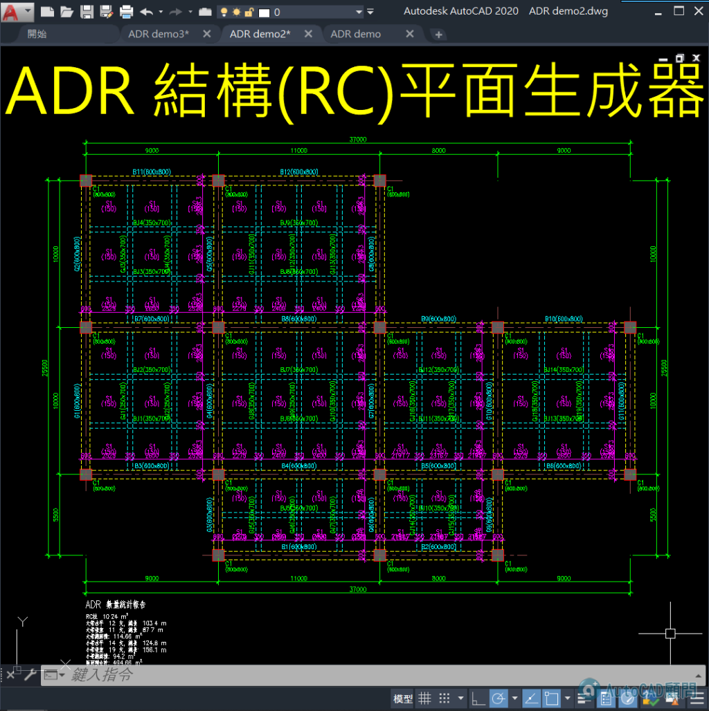
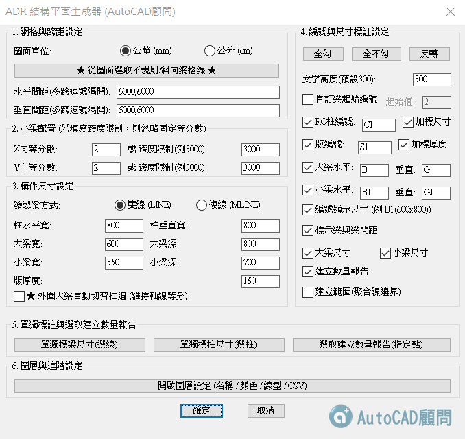
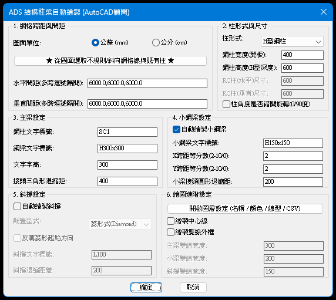
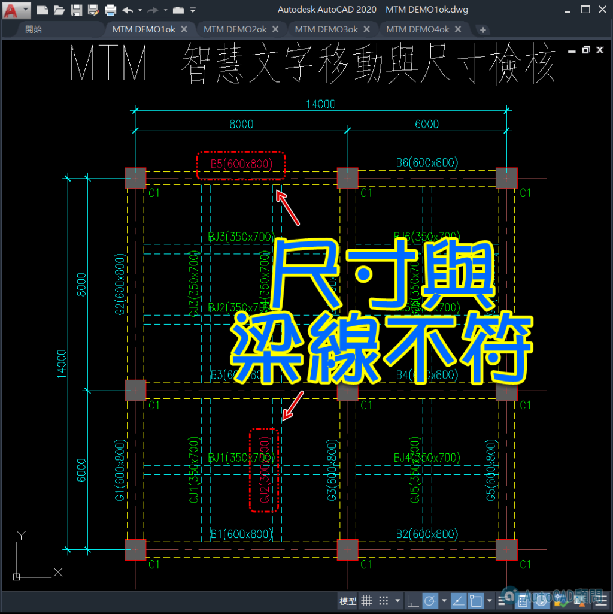
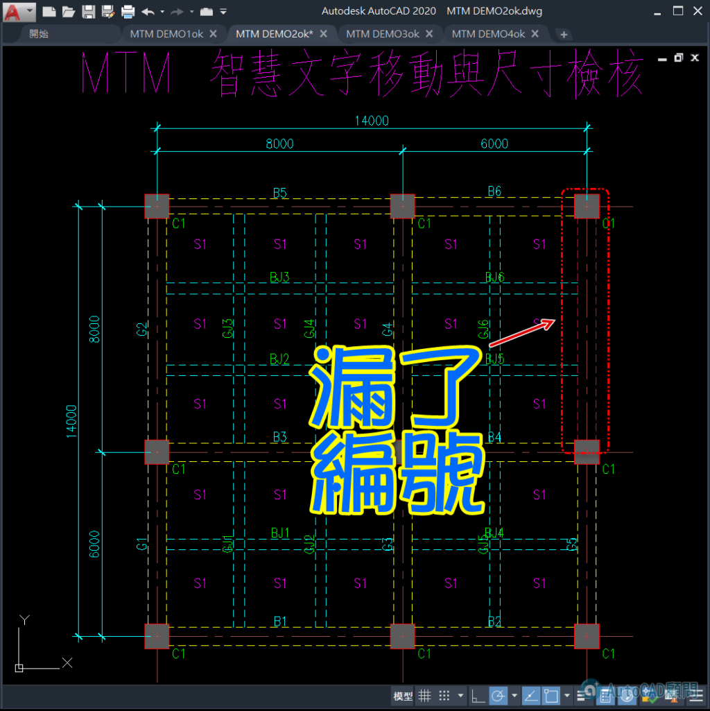

🚨 一鍵匯入百張圖檔 自動分類統計文字數量
還在對著圖面一張張數編號？標註對不對還要肉眼看？😱
這套 BEX 批次擷取工具，專為「文字統計」而生
🚨 一鍵匯入百張圖檔 自動分類統計文字數量
✅ 全自動擷取：框選圖層，一鍵抓取所有 TEXT、MTEXT 與圖塊屬性文字。
✅ 背景批次處理：不需開啟圖檔，直接選取資料夾，數百張 DWG 秒速算完。
✅ 直出 CSV 報表：統計結果直接進 Excel，數量、圖層、所在位置清清楚楚。
別再浪費時間手動加總，讓自動化幫你精準搞定數量統計！
🚨 算長度別再手動加 批次統計全圖檔線長(牆&梁)
圖面上幾百條線，算長度算到心累？一不留神就漏算？😱
這套 BEX 批次擷取工具，讓長度統計變得超簡單：
🚨 算長度別再手動加 批次統計全圖檔線長(牆&梁)
✅ 雙線自動除 2：算牆寬、算梁長？勾選「雙線除 2」，程式自動幫你折半計算。
✅ 分圖層小記：不同圖層長度自動分類，報表清清楚楚，不用再自己分類加總。
✅ 跨圖檔作業：不用開圖，直接選取資料夾，數百張圖紙長度秒速產出 CSV。
精準計算、快速交卷，把時間留給更重要的設計工作！
🚨 批次抓取全圖檔面積 直接轉出Excel
圖面上一堆閉合區域要算面積，點到手痠還怕點錯？😱
這套 BEX 批次擷取工具，讓面積統計變得超自動：
🚨 批次抓取全圖檔面積 直接轉出Excel
✅ 分圖層統計：不同空間、不同建材圖層自動分類小計，不用自己再按計算機。
✅ 背景批次處理：免開圖檔！選取資料夾，數百張圖紙面積一次算完。
✅ 直出 CSV 報表：統計結果直接匯入 Excel，空間清單與總面積一目了然。
算面積不再是體力活，讓自動化幫你準時下班！
🚨 一鍵擷取百張圖檔梁清單 跨圖重複檢查
結構圖編號對到眼花？梁清單還要人工手打進 Excel？😱
這套 BEX 批次擷取工具，讓梁編號統計變得超自動：
🚨 一鍵擷取百張圖檔梁清單 跨圖重複檢查
✅ 全自動擷取：只要指定圖層，一鍵抓取全圖檔 TEXT、MText 或圖塊內的梁編號（如 G1, B2）。
✅ 免開圖跨圖重複檢查：一鍵產出「重複文字報告」，專抓編號標錯、重複標註，精準率 100%！
✅ 直出 CSV 報表：統計結果與圖層資訊直接進 Excel，數量加總、位置對帳一次搞定。
自動化算圖，讓您告別人工校對的苦日子！
🚨 一鍵批次統計全圖檔數量 連圖塊裡的物件也能算
圖面上一堆圖塊，還在手動一個個算數量？漏算一顆就麻煩大了！😱
這套 BEX 批次擷取工具，讓圖塊統計變得超簡單：
🚨 一鍵批次統計全圖檔數量 連圖塊裡的物件也能算
✅ 支援分解單元：獨家功能！勾選「分解單元」，連「圖塊裡的圖塊」也能深入擷取。
✅ 免開圖批次作業：不用手動一張張開圖，選取資料夾，數百張圖紙數量秒速產出。
✅ 直出 CSV 報表：統計結果直接匯入 Excel，項目、數量、圖層清清楚楚，直接報價！
算數量不再是苦差事，讓自動化幫你精準搞定！
所有完整功能及後續新功能，一般會員可加入訂閱制取得
想要提升繪圖效率？ 👇 立即與我們聯繫
🎁AutoCAD顧問 L-I-N-E ID : @sni5329r
#AutoCAD #BEX指令 #批次處理 #數量計算 #標註統計 #結構設計 #CAD教學 #AppleDad #自動化工具 #重複文字報告
✨✨✨✨✨新增功能1：BLA指令✨✨✨✨✨
BLA 批次圖層管理神器 多圖免開檔一鍵處理
✅ 多圖 DWG 一鍵處理
✅ 圖層開關／鎖定／解鎖
✅ 外部參考自動重載
✅ 支援中文圖層名稱
1️⃣ 關閉圖層 (多圖 DWG 一鍵處理)
2️⃣ 刪除圖層 (多圖 DWG 一鍵處理)
3️⃣ 變更字體 (多圖 DWG 一鍵處理)
還在一張一張開啟 DWG 修改圖層嗎？
這支 AutoLISP 程式 BLA（Batch Layer Control） 可以讓你一次處理整個資料夾的 DWG 圖檔，大幅提升作業效率！
✨ 功能特色：
✔ 批次開啟多個 DWG
✔ 圖層開啟 / 關閉
✔ 凍結 / 解凍圖層
✔ 鎖定 / 解鎖圖層
✔ 出圖 / 不出圖設定
✔ 外部參考自動重載
✔ 支援中文圖層名稱
✔ 支援 CFG 設定檔管理
✔ 自動產生處理報告
適合建築、土木、機電、室內設計及所有 AutoCAD 使用者。
如果你經常需要批次整理圖層，這套工具絕對能幫你節省大量時間！
✨✨✨✨✨新增功能2：ADR指令✨✨✨✨✨
😎 RC結構平面一條條畫梁跟柱，設變改圖就全重來，真的很耗時間。




現在用 ADR 平面生成器，直接自動生成結構配置，效率大幅提升。
#AutoCAD #RC結構 #結構設計 #工程效率 #CAD神器 #自動化 #建築設計 #工程師日常
✨✨✨✨✨新增功能3：ADS指令✨✨✨✨✨
😎 鋼構平面只要點跟線！型號一換、柱位一動，全圖自動連動，再也不怕設計變更！

✨✨✨✨✨新增功能4：MTM指令✨✨✨✨✨



除了手動作業一個一個檢查
現在有其他選擇可以快速搞定
快來瞧瞧😙

#autolisp #自動化工作 #autocad #gemini
RC 結構圖畫完，最怕樑編號跟現場寬度對不起來？😨
人工對圖對到眼花，還可能看錯行？
這招一定要學起來！使用 MTM 指令：
✅ 一鍵匯入 CSV：自動關聯梁編號與標準尺寸。
✅ 智慧對齊：文字自動偏移定位，圖面超整潔。
✅ 顏色亮顯：寬度不符、查無編號？程式直接「變色」警告。
✅ 單線變雙線：抓完尺寸直接生成 S-DOUBLE-BEAM 圖層！
別再用肉眼校對了，讓 AI 與自動化 LISP 幫你省下 90% 的對圖時間！
還在手動 Offset 鋼梁雙線嗎？改個尺寸又要重畫？😨
這套 MTM 智慧指令 讓鋼構平面圖作業進入自動化時代！
內建「射線碰撞邏輯」：
✅ 自動查表：匯入 CSV，程式自動根據梁編號（如 G1, B2）抓取寬度。
✅ 柱邊貼齊：智慧偵測柱邊界，自動計算縮排，梁線不重疊、不穿幫。
✅ 單線擴展：一鍵選取單線，立刻生成標準 S-DOUBLE-BEAM 或複線。
✅ 異常檢核：尺寸對不上的編號自動變色，一眼抓出設計圖漏洞。
從單線草圖到正式施工圖，就是這麼快！🚀
代碼:
============================================================
開發者：AutoCAD顧問 (www.autocad-tw.com)
============================================================
1. 指令說明：
------------------------------------------------------------
MTM : 開啟主設定面板 (DCL)，可調整單位、搜尋範圍、更名圖層及模式切換。
2. 核心功能亮點：
------------------------------------------------------------
[CSV 自動化] : 匯入 CSV 對照表，程式自動關聯「梁編號」與「標準寬度」。
[智慧對齊] : 標註文字自動移動至梁中心上方，並自動旋轉至平行角度。
[異常亮顯] : 實測寬度與標註/CSV不符時，物件自動變為「亮紫色 (240色)」。
[射線檢測] : 單線生成雙線時，自動偵測柱位邊界，梁端點精準貼齊不穿幫。
[圖層管理] : 自動將生成的雙線派發至大梁、小梁或斜撐對應圖層。
3. 操作流程 (單線模式/鋼構模式)：
------------------------------------------------------------
步驟 A：輸入 MTM，設定「圖面單位」(mm/cm)。
步驟 B：點擊「載入 CSV」，選取您的尺寸對照表。
步驟 C：若要生成雙線，勾選「單線模式自動生成擴展線」。
步驟 D：點擊「單線(L)」或「複線(M)」執行：
1. 根據提示先選取「柱子」物件 (支援圖塊、聚合線)。
2. 再選取「梁中心線」(LINE)。
步驟 E：完成！檢視圖面是否有 240 色的異常物件。
4. CSV 格式規範 (範例)：
------------------------------------------------------------
請將 Excel 另存為 CSV (逗號分隔)，格式如下：
----------------------
編號 , 尺寸
G1 , 40X80
G2~G5 , 50X90
B1(S1) , 30X60
----------------------
* 支援 ~ 範圍連號、支援括號內編號解析。
5. 系統變數連動：
------------------------------------------------------------
搜尋範圍 : 控制文字離梁多遠會被抓取 (mm/cm 隨單位連動)。
偏移距離 : 文字生成後離梁邊緣的間距。
圖層過濾 : 可限定程式只處理特定圖層的物件，避免誤抓。
============================================================
AutoCAD顧問 專業結構自動化解決方案
更多資訊：https://www.autocad-tw.com
============================================================
✨✨✨✨✨新增功能5：LOP指令✨✨✨✨✨
各位工程師、設計師、繪圖員，每天畫圖、出圖是不是常常讓你加班到懷疑人生？
👉 專案一厚，幾十個甚至上百個配置分頁（Layout）切換到眼花、排序排到手軟？
👉 每次要出一整套圖，點圖紙、挑頁面設置點到滑鼠快點爛？
✨✨✨✨✨新增功能6：BLP指令✨✨✨✨✨
😱 還在一張一張開 DWG、出 PDF、改檔名、合併檔案嗎？圖面一多，不只耗時間，順序還很容易出錯。
😚 使用 BLP 批次出圖工具，一次加入整批 DWG，就能自動出圖、依清單順序合併 PDF、合併外部參考及分類檔案。支援 AutoCAD 2016 以上版本，輸入 BLP 就能開始！
🚨基本操作
✅ 選擇含有頁面設置的 DWT 或 DWG 樣板。
✅ 選擇要使用的頁面設置。
✅ 指定 PDF／DWG 輸出資料夾。
✅ 按「加入檔案」選擇多張 DWG，也可按「指定清單」匯入 TXT 清單。
✅ 拖曳或使用「上移／下移」調整順序。
✅ 選擇需要的功能：批次出圖
✅ 單一檔案：保留每張 PDF
✅ 合併為一個 PDF 檔
✅ 合併外部參考（另存）
✅ 儲存檔案（原檔）
✨✨✨✨✨新增功能7：BMP指令✨✨✨✨✨
需要從模型空間一次輸出多張圖框嗎？
BMP 可以依圖塊或聚合線批次抓取圖框、自動計算比例、排序並輸出 PDF，也能合併 PDF 及拆分 DWG。
🚨主要功能
✅ 支援 AutoCAD 2016 以上版本
✅ 依圖塊名稱或聚合線圖層批次選取
✅ 自動辨識 A0～A4、自訂紙張、橫式／直式與建議比例
✅ 五種出圖排序，PDF 固定依序號輸出，不會因高速程序完成順序而亂頁
✅ 合併為單一 PDF，同時保留逐張 PDF
✅ 日期分類：PDF 放入 PDF 資料夾，拆分 DWG 放入 CAD 資料夾
✅ DWG 拆檔依序輸出 Drawing_001.dwg、Drawing_002.dwg
別再做無謂的機械式苦工了！「蘋果爸愛分享」這次帶來史上最硬核的配置神級外掛雙升級，直接幫你的工作效率開外掛！🚀
=======================
歡迎您使用本程式！為了讓您能充分體驗程式的各項功能，我們提供了一個功能完整的試用版本。
試用版基於以下兩種條件進行限制，**只要符合其中任何一項**，試用期將會自動結束：
1. **試用有效期間**
* 本程式設有固定的啟用日期與到期日。
* 您必須在指定的日期範圍內使用：[2026-07-26] 至 [2026-08-03]。
* 若您的電腦系統日期早於啟用日或晚於到期日，程式將無法啟動。
2. **試用使用次數**
* 本程式的試用版允許您啟動使用 [168] 次。
* 每次啟動程式，計數器將會自動減一。當使用次數達到上限後，程式將無法再次開啟。
當試用期結束時，程式將會彈出提示訊息，告知「目前不在試用期範圍內」，並且無法繼續使用。如需繼續使用，請聯繫我們以取得正式版本。
=======================
1. **請勿修改系統日期**
* 程式會自動偵測您電腦的目前日期。試圖透過回調系統日期來延長試用期，將會導致程式立即判定為過期而無法使用。
2. **試用狀態與系統綁定**
* 試用次數等資訊是記錄在您目前的電腦及使用者帳戶中。即使移除並重新安裝程式，也**無法重置**試用次數與試用期限。
3. **試用結束後無法恢復**
* 一旦試用期因為「日期過期」或「次數用盡」而結束，該試用授權即失效，無法恢復或延長。
4. **一個機會**
* 每部電腦僅提供一次完整的試用機會。請在試用期間內充分測試，以確保程式符合您的需求。
=======================
📢 感謝您的觀看！
若有任何問題或需要購買租賃版 (訂閱制一年)，請隨時與我們聯繫。
👇這裡可以購買(訂閱制一年一期)
https://autocad-tw.1shop-app.com/qm62pc#Type=Product&ID=N6qx3aVnzXNPQe287jZWBXY2
👇加購買專屬B會員+訂閱制一年一期
https://autocad-tw.1shop-app.com/qm62pc#Type=Product&ID=PRnbJD8WzwAPbQxv72V3oevY
購買時請提供您的gmail信箱 及 論壇會員名稱
製作好授權會寄信通知您線上下載安裝使用(有安裝教學很簡單)